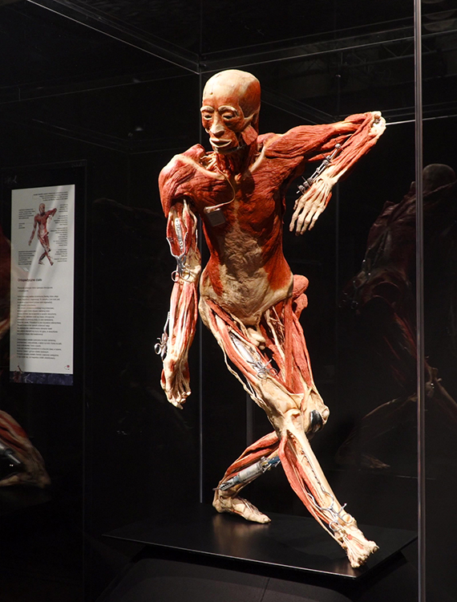
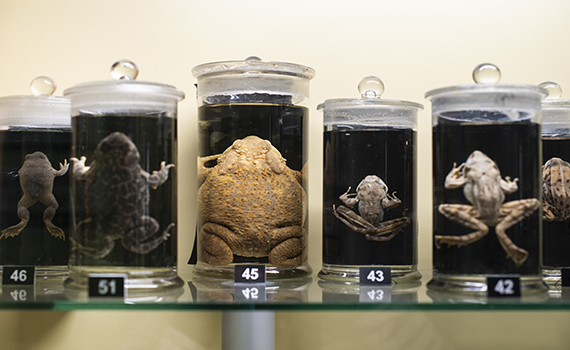
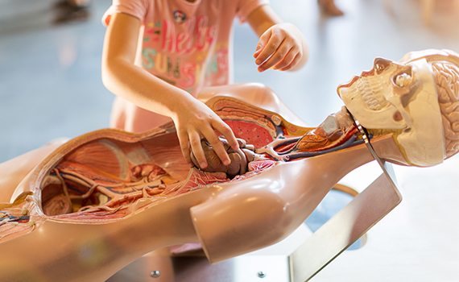
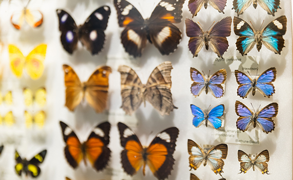
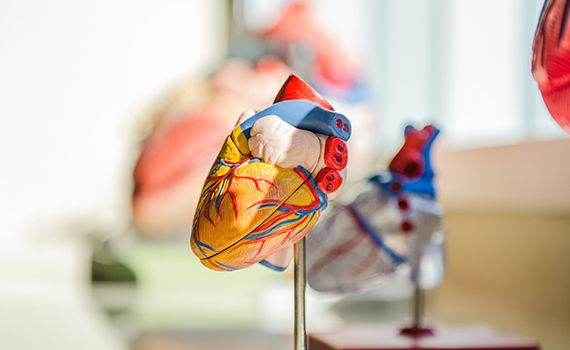

Biology
Our fantastic exhibition, ‘The Sky Above Us’, explores the night sky and what we can see and know about the universe around us.
We’ll locate the various constellations and galaxies that can be seen and learn a bit about the early navigators who used the stars to travel by.
Follow the journey of our solar exploration: from early Arab traders, to Galileo’s telescope, to the latest exploration of the planets in our solar system.
Favorite organs
Heart
Planet Earth, our home, is the third planet from the sun. While scientists continue to hunt for clues of life beyond Earth, our home planet remains the only place in the universe where we've ever identified living organisms.
Brain
Mars, who is also known as the 'Red Planet' due to its beautiful, strong red colour. Mars is the fourth planet from the sun in our solar system. It can get pretty cold on Mars, since it is so far away from the sun. At the equator, temperatures can reach 20°C, but at its poles it can get to as low as -140°C. Brr!
Eye
Neptune is the eighth planet from the Sun, making it the most distant in the solar system. The reason Neptune is blue is due to the presence of a specific gas named methane. Neptune is about four times wider than Earth. If Earth were a large apple, Neptune would be the size of a basketball.
Explore
    Events
The human body: Anatomy, facts, and functions
Tue-Thu 15:00, 2022
The human body consist of several biological systems that carry out specific functions necessary for everyday living. Let’s take a closer look at some of them and study what happens if an intruder enters.

The world through a microscope
Fri 17:00, 2022
Ever wondered how micro-organisms looks like? Come join us in this lab session where we are going to study the world through a microscope.
Visit by a biologist
March 18-20 11:00, 2022
It is our pleasure to announce that biologist Ola Nordmann will be delivering 3 lab sessions where you will be studying several different types of food through a microscope.